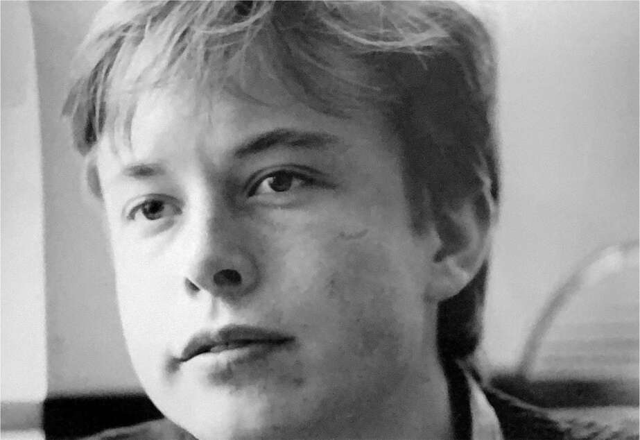

Jekyll và Hyde
Ở tuổi mười bảy, sau bảy năm sống với cha, Elon nhận ra rằng mình phải trốn thoát. Cuộc sống với ông ngày càng trở nên đáng sợ.
Có những lúc Errol vui vẻ và hài hước, nhưng đôi khi ông lại trở nên u ám, lăng mạ người khác bằng lời nói, và chìm đắm trong những ảo tưởng và thuyết âm mưu. “Tâm trạng của ông ấy có thể thay đổi chóng mặt,” Tosca nói. “Mọi thứ có thể đang rất tốt đẹp, nhưng chỉ trong tích tắc, ông ấy sẽ trở nên hung dữ và buông lời sỉ vả.” Cứ như ông ấy có hai nhân cách vậy. “Phút trước ông ấy còn rất thân thiện,” Kimbal nói, “và phút sau ông ấy sẽ hét vào mặt bạn, giảng giải bạn hàng giờ liền – đúng nghĩa là hai hoặc ba tiếng đồng hồ trong khi bắt bạn đứng yên tại chỗ – gọi bạn là vô dụng, thảm hại, đưa ra những lời nhận xét cay độc và gây tổn thương, không cho bạn rời đi.”
Các anh em họ của Elon bắt đầu ngại đến thăm. “Bạn không bao giờ biết mình sẽ gặp phải điều gì,” Peter Rive nói. “Đôi khi Errol sẽ nói kiểu, ‘Bố vừa mua cho chúng ta mấy chiếc mô tô mới, đi nào.’ Lúc khác ông ấy lại tức giận, đe dọa và, ôi trời, bắt bạn cọ nhà vệ sinh bằng bàn chải đánh răng.” Khi Peter kể cho tôi nghe điều này, anh ấy dừng lại một chút rồi, hơi ngập ngừng, nhận xét rằng Elon đôi khi cũng có những thay đổi tâm trạng tương tự. “Khi Elon vui vẻ, đó là điều tuyệt vời và thú vị nhất trên đời. Còn khi tâm trạng anh ấy tồi tệ, anh ấy trở nên rất u ám, và bạn chỉ còn biết dè chừng.”
Một hôm, Peter đến nhà và thấy Errol đang ngồi mặc quần lót ở bàn bếp với một bánh xe roulette bằng nhựa. Ông ấy đang thử xem lò vi sóng có thể ảnh hưởng đến nó hay không. Ông ấy quay bánh xe, ghi lại kết quả, sau đó quay lại và đặt nó vào lò vi sóng rồi ghi lại kết quả. “Thật điên rồ,” Peter nói. Errol đã tin chắc rằng mình có thể tìm ra một hệ thống để chiến thắng trò chơi. Ông ấy đã nhiều lần kéo Elon đến sòng bạc Pretoria, ăn mặc cho cậu bé sao cho trông già hơn mười sáu tuổi, và bắt cậu ghi lại các con số trong khi Errol sử dụng máy tính giấu dưới thẻ đặt cược.
Elon đến thư viện và đọc một vài cuốn sách về roulette, thậm chí còn viết một chương trình mô phỏng roulette trên máy tính của mình. Sau đó, cậu cố gắng thuyết phục cha mình rằng không có kế hoạch nào của ông ấy sẽ hiệu quả. Nhưng Errol tin rằng ông đã tìm ra một sự thật sâu sắc hơn về xác suất và, như sau này ông mô tả với tôi, một “giải pháp gần như hoàn hảo cho cái gọi là ngẫu nhiên.” Khi tôi yêu cầu ông ấy giải thích, ông ấy nói, “Không có ‘sự kiện ngẫu nhiên’ hay ‘may rủi.’ Tất cả các sự kiện đều tuân theo Dãy Fibonacci, giống như Tập Mandelbrot. Tôi đã tiếp tục khám phá ra mối quan hệ giữa ‘may rủi’ và Dãy Fibonacci. Đây là chủ đề cho một bài báo khoa học. Nếu tôi chia sẻ nó, tất cả các hoạt động dựa trên ‘may rủi’ sẽ bị hủy hoại, vì vậy tôi đang phân vân có nên làm điều đó hay không.”
Tôi không chắc tất cả những điều đó có nghĩa là gì. Elon cũng vậy: “Tôi không biết làm thế nào mà ông ấy từ một kỹ sư giỏi lại tin vào ma thuật. Nhưng bằng cách nào đó, ông ấy đã trải qua sự thay đổi đó.” Errol có thể rất quyết đoán và đôi khi rất thuyết phục. “Ông ấy thay đổi thực tại xung quanh mình,” Kimbal nói. “Ông ấy sẽ bịa ra mọi thứ, nhưng ông ấy thực sự tin vào thực tại sai lầm của chính mình.”
Đôi khi Errol đưa ra những khẳng định chung chung với các con mình mà không liên quan đến sự thật, chẳng hạn như khẳng định rằng ở Hoa Kỳ, tổng thống được coi là thần thánh và không thể bị chỉ trích. Lúc khác, ông ấy lại thêu dệt những câu chuyện kỳ lạ, tự cho mình là anh hùng hoặc nạn nhân. Tất cả đều được khẳng định với niềm tin mãnh liệt đến mức Elon và Kimbal thấy mình đang phải đặt câu hỏi về chính quan điểm của họ về thực tại. “Bạn có thể tưởng tượng được việc lớn lên như thế nào không?” Kimbal hỏi. “Đó là sự tra tấn tinh thần, và nó ám ảnh bạn. Cuối cùng, bạn tự hỏi, ‘Thực tại là gì?’ ”
Tôi bị cuốn vào câu chuyện rối rắm của Errol. Trong loạt cuộc gọi và email suốt hai năm, ông kể tôi nghe nhiều phiên bản khác nhau về mối quan hệ và tình cảm của ông với các con, Maye, và con gái riêng, người mà sau này ông có thêm hai người con (sẽ nói thêm về điều này sau). Ông khẳng định: "Elon và Kimbal đã tự vẽ nên câu chuyện về tôi, và nó không đúng sự thật." Ông nhấn mạnh rằng những lời kể về việc ông bạo hành tâm lý chỉ là để làm hài lòng mẹ chúng. Nhưng khi tôi gặng hỏi, ông lại bảo tôi cứ nghe theo phiên bản của các con. "Tôi không quan tâm nếu chúng chọn một câu chuyện khác, miễn là chúng hạnh phúc. Tôi không muốn lời nói của mình đối đầu với lời nói của chúng. Cứ để chúng tự do bày tỏ."

§Khi nhắc đến cha mình, Elon đôi khi bật cười, một tiếng cười chua chát. Nó giống với tiếng cười của cha anh. Một số từ ngữ Elon dùng, cách anh nhìn chằm chằm, sự thay đổi đột ngột từ vui vẻ sang u ám rồi lại vui vẻ, khiến các thành viên trong gia đình nhớ đến hình bóng Errol trong anh. Justine, vợ đầu của Elon, chia sẻ: "Tôi thấy những câu chuyện kinh khủng mà Elon kể lại hiện lên trong chính hành vi của anh ấy. Điều đó khiến tôi nhận ra rằng thật khó để không bị ảnh hưởng bởi những gì chúng ta trải qua khi lớn lên, ngay cả khi đó không phải là điều chúng ta mong muốn." Thỉnh thoảng, cô dám nói những câu như "Anh đang trở thành cha anh đấy." Cô giải thích: "Đó là câu nói ám hiệu của chúng tôi để cảnh báo anh ấy rằng anh ấy đang bước vào vùng tối."
Nhưng Justine nói rằng Elon, người luôn dành tình cảm cho các con, khác với cha mình ở một điểm cơ bản: "Với Errol, luôn có cảm giác rằng những điều tồi tệ có thể xảy ra xung quanh ông ấy. Trong khi nếu ngày tận thế xảy ra, bạn sẽ muốn ở trong đội của Elon, vì anh ấy sẽ tìm ra cách để kiểm soát lũ zombie. Anh ấy có thể rất khắc nghiệt, nhưng cuối cùng, bạn có thể tin tưởng anh ấy sẽ tìm ra cách để chiến thắng."
Để điều đó xảy ra, anh phải bước tiếp. Đã đến lúc rời khỏi Nam Phi.
Musk bắt đầu thuyết phục cả cha lẫn mẹ chuyển đến Mỹ cùng anh chị em mình. Cả hai đều không đồng ý. Anh kể: "Vì vậy, tôi đã nói: 'Vậy thì con sẽ tự đi'."
Đầu tiên, anh cố gắng xin quốc tịch Mỹ với lý do ông ngoại sinh ra ở Minnesota, nhưng không thành công vì mẹ anh sinh ra ở Canada và chưa bao giờ xin quốc tịch Mỹ. Vì vậy, anh kết luận rằng đến Canada có thể là bước đầu dễ dàng hơn. Anh tự mình đến lãnh sự quán Canada, lấy đơn xin hộ chiếu và điền thông tin không chỉ cho mình mà còn cho mẹ, em trai và em gái (nhưng không có cha). Giấy phép được cấp vào cuối tháng 5 năm 1989.
Anh nói: "Tôi đã có thể rời đi ngay sáng hôm sau, nhưng vé máy bay thời đó rẻ hơn nếu mua trước mười bốn ngày, nên tôi phải đợi hai tuần." Vào ngày 11 tháng 6 năm 1989, khoảng hai tuần trước sinh nhật lần thứ mười tám, anh ăn tối tại nhà hàng sang trọng nhất Pretoria, Cynthia's, cùng cha và các em, sau đó họ đưa anh ra sân bay Johannesburg.
Elon kể lại lời cha anh nói với vẻ khinh miệt: "Mày sẽ quay lại trong vài tháng nữa thôi. Mày sẽ chẳng bao giờ thành công đâu."
Như thường lệ, Errol lại có phiên bản riêng của câu chuyện, trong đó ông là người hùng. Theo ông, Elon bị trầm cảm nặng vào năm cuối trung học. Nỗi tuyệt vọng của Elon lên đến đỉnh điểm vào Ngày Quốc Khánh, 31 tháng 5 năm 1989. Gia đình đang chuẩn bị xem diễu hành, nhưng Elon không chịu ra khỏi giường. Cha cậu dựa vào chiếc bàn lớn trong phòng Elon, với chiếc máy tính quen thuộc, và hỏi: "Con có muốn đi du học Mỹ không?". Elon liền tỉnh hẳn. "Có ạ", cậu trả lời. Errol khẳng định: "Đó là ý tưởng của tôi. Cho đến lúc đó, nó chưa bao giờ nói muốn sang Mỹ. Vì vậy, tôi nói: 'Vậy thì ngày mai con nên đi gặp tùy viên văn hóa Mỹ', một người bạn của tôi từ Rotary."
Elon nói rằng lời kể của cha mình chỉ là một trong những tưởng tượng phóng đại, tự cho mình là anh hùng. Trong trường hợp này, điều đó hoàn toàn sai sự thật. Vào Ngày Quốc Khánh năm 1989, Elon đã có hộ chiếu Canada và mua vé máy bay.